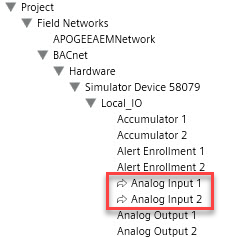

System Browser
System Browser displays objects in the management platform through various views which you can select from a drop-down list. System Browser also supports searching and filtering of objects, displaying names and descriptions of objects, selecting single and multiple objects, and dragging objects into Trends, Schedules, and Reports. The System Browser hierarchy updates dynamically to reflect changes at the system level.
For procedures and workflows, see the step-by-step section.
Searching and Filtering
The Search area consists of an editable Search list box, a Search button, a drop-down list arrow, a Filter Search icon, and a Save Search icon.
Searching helps you quickly find objects in the currently selected view. You can perform searches on either names or descriptions but not on a combination of both names and descriptions. To start a search, you enter a search string in the Search list box, using wildcards if desired, and then press ENTER. See the Wildcards section for more information about them.
After the search results display, you can save the search using the Save As feature, entering a name in the Save Search field, and then clicking Save. The system saves the search to your own local user profile, and the search then becomes available only to you. You access saved searches by clicking the drop-down list arrow in the Search list box.
Filtering helps you limit the number of objects shown during a search, while also providing an efficient way to find objects without scrolling through the entire tree or without having to remember which node an object belongs to. You access the filtering fields by clicking Filter Search. You can then filter the objects by selecting individual or multiple building control disciplines, sub disciplines, types, sub types, or an alias. Additionally, the Other drop-down list box allows you to filter objects for out of scan, override protection, and validation profile settings.
Selecting the Search within selection check box applies your filter selections only to the current node selection in the System Browser tree. Clicking the Search button starts the search and displays the results of your filter selections.
Search results for both the searching and filtering features are sorted by path, using grouping, and by the name within each group. For example, a search for objects located in the east wing of the 92nd floor in your building could produce results similar to the following:
Willis Tower\Floor 92\East Wing\ |
EastWingTemp |
Wildcards
Two wildcard characters are supported in System Browser—the asterisk (*) and the question mark (?). Each functions differently. The asterisk wildcard serves as a placeholder for zero or more characters. The question mark wildcard serves as a placeholder for exactly one character only. Therefore, each wildcard serves different purposes.
- * (asterisk): Allows you to add zero or more characters to your search criteria. For example, "a*" matches and displays, “a”, "ab", "abc" and "abcd".
- ? (question mark): Allows you to add one character to your search. For example, "ab?" matches and displays "abc", but does not match or display "a", "ab" and "abcd".
Display Modes for Objects
System Browser supports four modes for displaying objects. Show Description is the default display mode the first time you log on to the system with new credentials. After you log on, you can select your preferred mode, which the system saves for your next session. The mode you select affects the way the objects appear throughout the various panes in System Manager. The following table summarizes the four modes with display examples:
Display Modes for Objects | |
Display Mode | Example |
Show Description | Air Handler Unit 1 |
Show Description [Name] | Air Handler Unit 1 [AHU1] |
Show Name | AHU1 |
Show Name [Description] | AHU1 [Air Handler Unit 1] |
Views
You can select from different views of the object types in the management platform, depending on how your system is set up. Selecting a view does not change the physical makeup of the system. The views merely represent convenient and different ways of looking at the system. Default views include Application View and Management View. The currently selected view is saved from session to session. In other words, the view that is selected when you close the software is the view that the system restores the next time you open the control software. Your last highlighted object selection in the System Browser tree, and the state of the expanded and collapsed folders, are not saved and restored from session to session.
Making Object Selections
System Browser offers you the following two methods for making objects the primary selection in System Manager:
- Automatic Selection (default): For selecting a single-object, you click the object, and it then automatically becomes the new primary selection in System Manager. For selecting multiple objects, you press and hold the CTRL key or the SHIFT key while highlighting the objects. Upon releasing either key, the objects become the new primary selection in System Manager.
- Manual Selection: First, check the Manual Navigation box, then highlight the objects in one of three ways: 1) Clicking the object, 2) Pressing and holding the CTRL key while clicking multiple objects, or 3) pressing and holding the SHIFT key while clicking the beginning and ending range of objects. To make the highlighted objects the primary selection for System Manager, you can right-click and choose Send to the Primary Pane, or click the Send button. When selecting a single object, you can also double-click the object to make it the primary selection.
Dragging-and-Dropping
System Browser supports drag-and-drop of single or multiple objects from any of the views—including the Search Result view—to Trends, Schedules, and Reports. You can cancel a dragging operation by pressing the ESC key or by dragging the objects back to the original view (or another no-drop zone) and then dropping them.
Copying
System Browser supports copying a single object name, description, alias, or designation. Right-clicking an object displays a contextual menu with the Copy command. Selecting Copy displays selectable attributes.
Highlighted Objects

Highlighted objects in System Browser have a curved arrow next to them. The arrows indicate existing and resolved data points referenced in a graphic when Graphics Editor is in Runtime mode.
System Browser does not automatically expand the parent of highlighted objects. To see them, you must manually expand the parent node.
For additional information, see Highlighted Nodes in System Browser Linked to a Graphic.